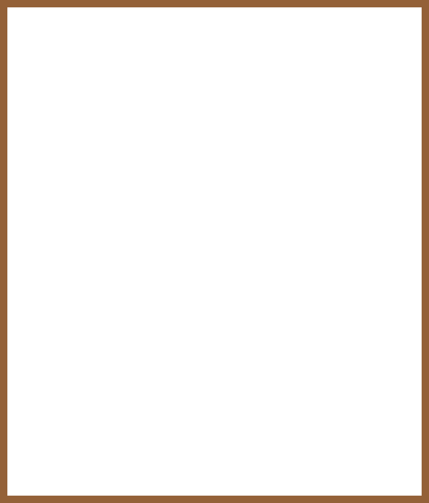
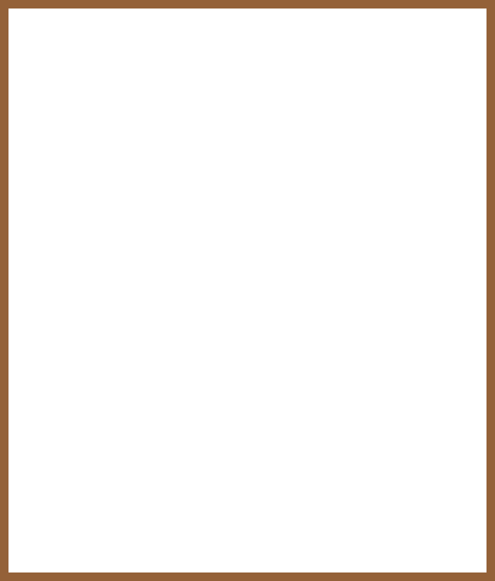
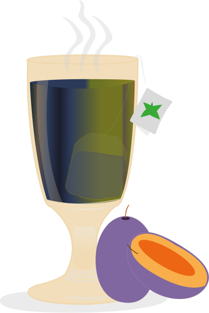
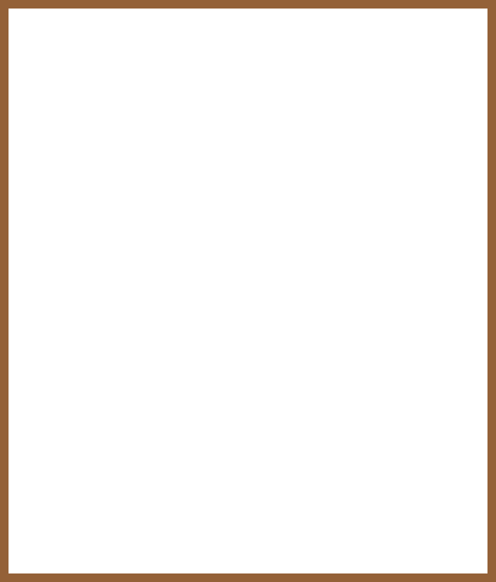

Die Getränkekarte
 





HeyHuerenaff wie gohds?
Danke guet ond der Huerenaff?
Los mou Huerenaff. Gömmer es Kafi Huerenaff go näh?
Jo Huerenaff. Das esch e Rüüdig gueti Idee.
«Oder nehmwer en Tee ?»
«nor wenn du Gönnerin wersch!»
«onbedengt.»
« Met oder ohni Schuss?»
«Super, ond was för en Tee wotsch denn?
